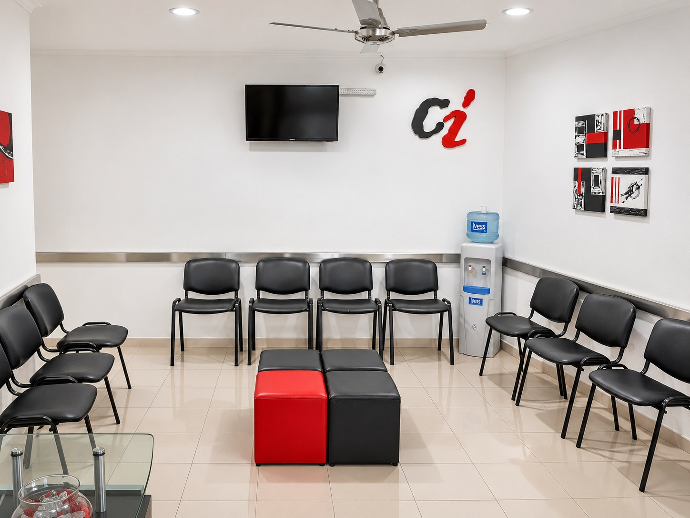
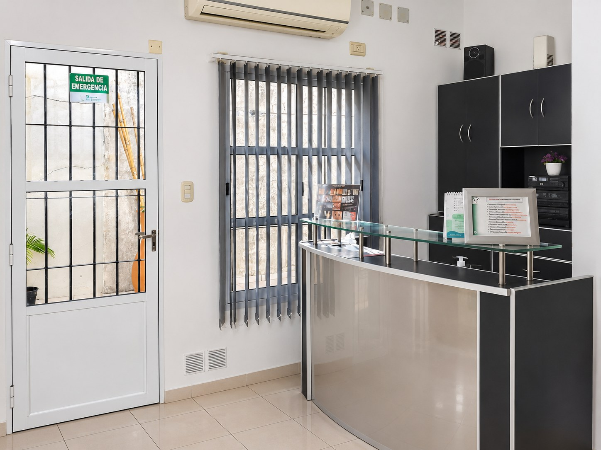
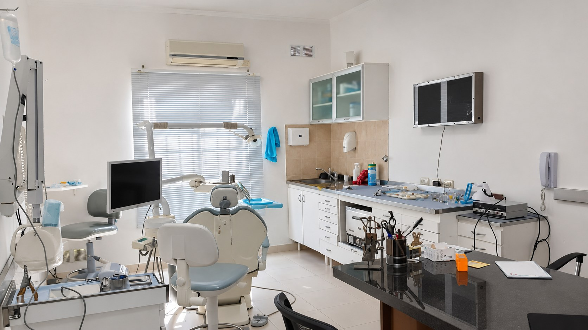

Odontología general
Consultas y evaluación del estado de salud bucal para orientar el cuidado de dientes y encías.
CONSULTORIOS MÉDICOS Y ODONTOLÓGICOS EN PARANÁ
Profesionales de distintas disciplinas y una atención cercana en un mismo lugar. Te esperamos en Consultorios Italia.

EL CENTRO
Somos Consultorios Italia, un espacio de atención profesional en distintas disciplinas de la salud en Paraná, Entre Ríos.
En Italia 569 reúnen su atención profesionales de odontología, medicina familiar, medicina clínica, ecografía, medicina estética, medicina laboral, otorrinolaringología, psiquiatría, psicopedagogía y nutrición deportiva.
Secretaría te orienta sobre el profesional y el área de atención correspondiente a tu consulta. Cada profesional realiza la evaluación y orientación propias de su disciplina.
Encontranos en ParanáÁREAS DE ATENCIÓN
Conocé nuestras áreas de atención.
La indicación de cada tratamiento requiere una evaluación individual.
Consultas y evaluación del estado de salud bucal para orientar el cuidado de dientes y encías.
Evaluación de alternativas para reemplazar piezas dentales, de acuerdo con cada caso.
Evaluación de la posición de los dientes y la mordida, con orientación sobre las opciones de tratamiento.
Atención orientada al desarrollo de los maxilares y a las funciones del sistema bucal.
Alternativas protésicas para la reposición de piezas dentales según las necesidades de cada paciente.
Evaluación integral y planificación de tratamientos para atender la función y la salud bucal.
También podés consultar por atención en las siguientes áreas, según la disponibilidad de cada profesional.
NUESTROS ESPACIOS
Italia 569, Paraná.
Un lugar para encontrarnos y cuidar tu salud.


Desde la recepción hasta el espacio de atención, conocé los ambientes de nuestro centro en Italia 569.
NUESTROS PROFESIONALES
Conocé a quienes atienden en Consultorios Italia. Consultá a secretaría por turnos y disponibilidad.
Odontólogo
Odontóloga
Odontóloga
Médica familiar
Médica familiar · Médica homeopática
Medicina estética · Medicina familiar
Médica laboral
Médico clínico · Ecografista
Otorrinolaringóloga
Psicopedagoga
Médica psiquiatra
Nutrición deportiva
Para solicitar una consulta, indicá a secretaría el nombre del profesional o el área de atención.
Consultar a secretaríaUBICACIÓN Y CONTACTO
Comunicate con secretaría para solicitar un turno y consultar disponibilidad.
Contactar por WhatsAppCOMUNICACIÓN CON PACIENTES
Estamos preparando un servicio de recordatorios de turnos. Su envío requerirá la autorización del paciente. Consultá a secretaría por su disponibilidad y por cómo autorizar o dejar de recibir estos mensajes.
Esta información describe un servicio previsto. La reserva y confirmación de turnos se coordinan con secretaría.